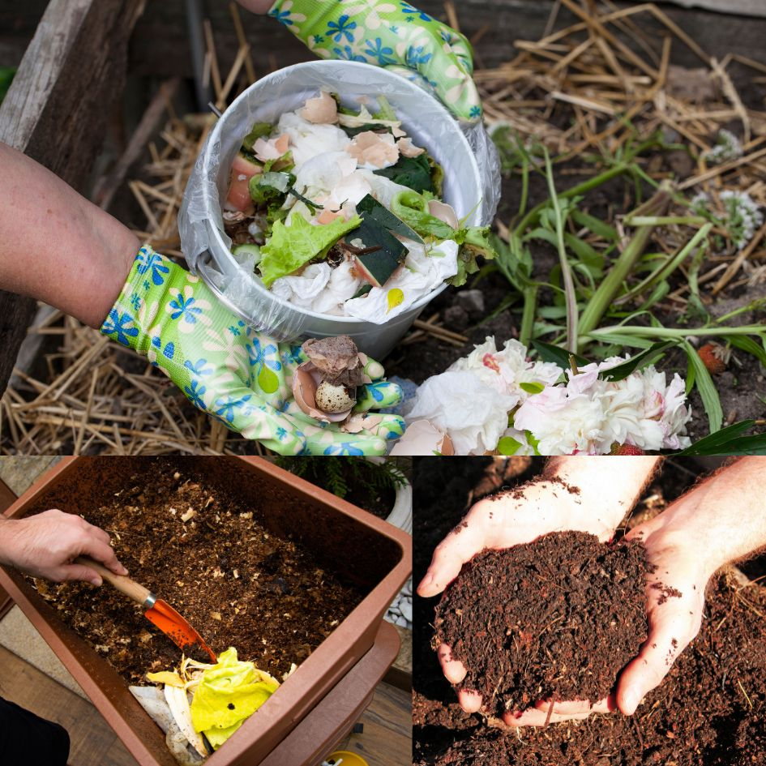

BIOFERTILIZANTE PARA USO EM PLANTAS ORNAMENTAIS E HORTAS
A Compostagem doméstica.

Compostagem doméstica é uma técnica que parte de um processo natural da decomposição de resíduos orgânicos, como cascas de frutas e restos de comida, para produzir adubo e fertilizar novas plantações, como hortas e jardins. O processo é realizado por milhares de microrganismos presentes no solo, que possuem matéria orgânica e fazem dela a sua principal fonte de alimentação, absorvendo energia, nutrientes minerais e carbono.
Entre os principais benefícios da compostagem doméstica estão:
Diminuição do volume de resíduos enviados aos aterros, reduzindo o impacto ambiental e o custo de transporte;
Reciclagem do material orgânico e enriquecimento do solo com nutrientes gerados pela composteira;
Adubo ecológico que pode ser usado na produção de alimentos orgânicos em hortas domésticas;
Diminuição do mau cheiro do lixo doméstico e consequentemente atração de menos insetos;
Redução da necessidade de uso de fertilizantes químicos, que podem ser prejudiciais à saúde e ao meio ambiente;
Economia de recursos naturais e financeiros, pois o adubo é produzido em casa sem custo;
Educação ambiental e conscientização sobre o ciclo da matéria orgânica e a responsabilidade pelo lixo gerado.
Compostagem com minhocas.
A compostagem doméstica pode ser feita com a ajuda de minhocas, que aceleram o processo de decomposição e produzem um húmus rico em matéria orgânica. Existem diferentes modelos de composteiras domésticas, que podem ser compradas ou feitas em casa com materiais recicláveis. O importante é manter as condições adequadas de umidade, oxigênio e temperatura para que os microrganismos façam o seu trabalho
como aplicar o biofertilizante
FLORES CULTIVADAS COM BIOFERTILIZANTE DASMINHOCAS®